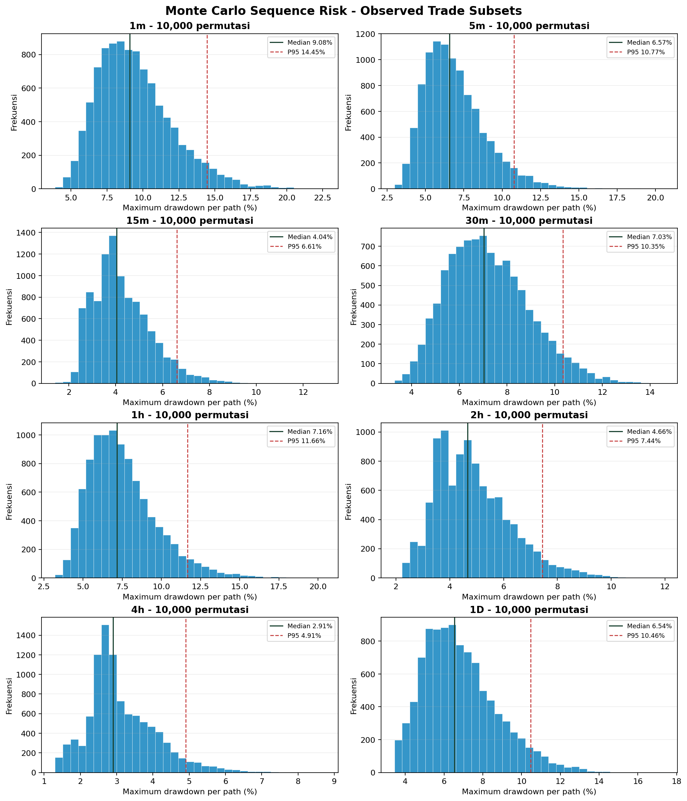

Untuk setiap timeframe, PnL realized diacak melalui 10.000 permutasi tanpa replacement dengan seed tetap. Setiap path dimulai dari USD 40. Ruin didefinisikan sebagai equity menyentuh atau melewati 50% initial capital (USD 20).
Karena setiap permutasi memakai himpunan trade yang sama, terminal return bersifat invariant dan interval persentil terminal return degenerat. Analisis utama adalah distribusi maximum drawdown serta frekuensi pelanggaran ruin threshold. Interval yang dilaporkan adalah interval simulasi, bukan confidence interval inferensial.
| timeframe | trade_count | simulations | median_terminal_return_pct | median_max_drawdown_pct | max_drawdown_interval_95_lower_pct | max_drawdown_interval_95_upper_pct | worst_max_drawdown_pct | ruin_probability_pct |
|---|---|---|---|---|---|---|---|---|
| 1m | 61 | 10000 | 15.5775 | 9.0787 | 5.5005 | 15.6946 | 22.6450 | 0.0000 |
| 5m | 61 | 10000 | 31.4400 | 6.5703 | 4.0103 | 11.7832 | 20.5500 | 0.0000 |
| 15m | 30 | 10000 | 12.6550 | 4.0401 | 2.4896 | 7.2874 | 12.9162 | 0.0000 |
| 30m | 28 | 10000 | -1.2050 | 7.0261 | 4.3927 | 10.9661 | 14.5831 | 0.0000 |
| 1h | 60 | 10000 | 28.7725 | 7.1601 | 4.3696 | 12.8229 | 20.4257 | 0.0000 |
| 2h | 28 | 10000 | 7.0675 | 4.6574 | 2.6636 | 8.2133 | 11.9620 | 0.0000 |
| 4h | 28 | 10000 | 21.1725 | 2.9052 | 1.5650 | 5.4479 | 8.7363 | 0.0000 |
| 1D | 28 | 10000 | 8.6750 | 6.5397 | 3.8741 | 11.2733 | 17.3553 | 0.0000 |
